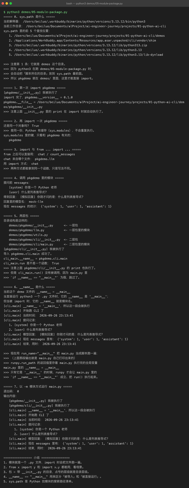
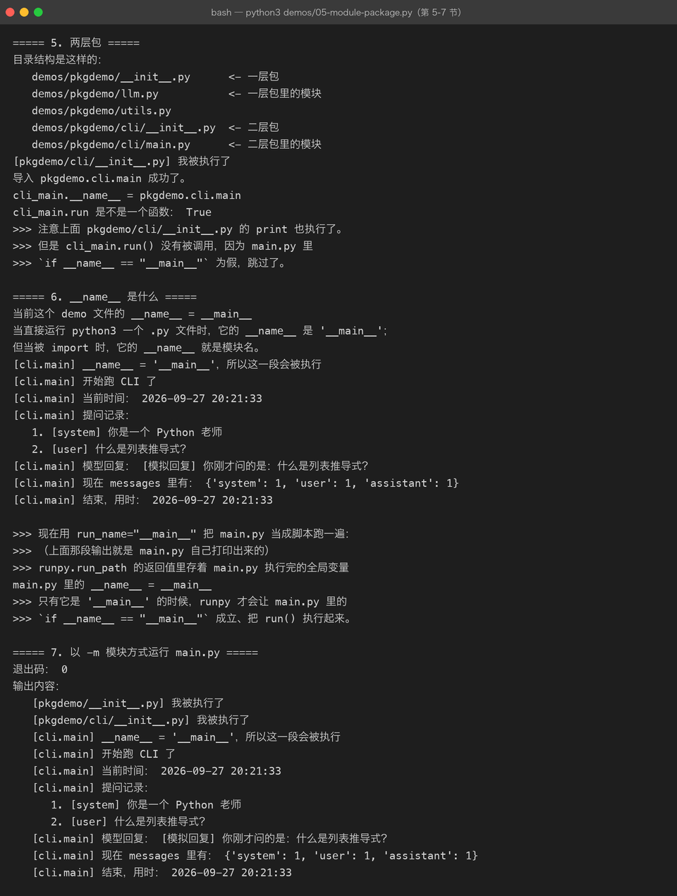

Lesson 05 — Module / Package：把 AI CLI Assistant 从脚本变成 Python 项目
AI Engineer Journey · Project 01 — Python AI CLI Assistant 学习方式：Project-Based Learning【项目驱动学习】 主线项目：Python AI CLI Assistant 本章目标：通过拆分现有项目，理解 Module【模块】、Package【包】、import，以及基本的 Python 项目结构。
1. 这一章不学“模块理论”
我们先看项目。
上一章我们完成：
AI CLI Assistant v0.4现在 main.py 可能已经有一两百行：
main.py
│
├── show_banner()
├── show_help()
├── show_history()
├── clear_history()
├── get_message_count()
├── show_last_message()
├── add_message()
├── generate_mock_response()
└── while True最开始：
放在一起没问题。
但是随着项目继续开发，我们还要加入：
保存聊天记录
读取聊天记录
LLM API
配置
模型选择
错误处理
日志如果全部继续塞进 main.py：
main.py
100 行
↓
300 行
↓
500 行
↓
1000 行维护会越来越困难。
所以我们现在遇到一个新的工程需求：
把不同职责的代码拆到不同文件。
这就是本章真正要解决的问题。
2. 项目目标
本章结束之后：
原来：
main.py
└── 所有代码
升级：
main.py
conversation.py
assistant.py
config.py最终：
main.py
↓
负责启动程序和主循环
conversation.py
↓
负责聊天记录
assistant.py
↓
负责 AI Assistant 行为
config.py
↓
负责配置我们会发现：
Python 的 Module【模块】其实不是一个“为了考试而学的语法”，而是项目变大之后自然出现的工程需求。
3. 先做一个最小实验
创建：
05-module-package/
└── demo/
├── main.py
└── math_utils.pymath_utils.py：
def add(a, b):
return a + b
def multiply(a, b):
return a * bmain.py：
from math_utils import add, multiply
print(add(10, 20))
print(multiply(10, 20))运行：
python main.py得到：
30
200这里发生了什么？
main.py
↓
import
↓
math_utils.py
↓
使用 add()
使用 multiply()这就是最基础的：
Module【模块】
4. Module 到底是什么？
当前先简单理解：
一个 Python 文件，本身就可以作为一个 Module。
例如：
math_utils.py就是一个模块。
里面有：
def add():
...其他文件可以导入：
from math_utils import add然后使用。
所以：
id="r7g37t"
.py 文件
↓
Module5. 为什么模块对 AI 项目很重要？
回到我们的 CLI Assistant。
我们现在有：
def show_history(messages):
...
def add_message(messages, role, content):
...
def clear_history(messages):
...这些函数都属于：
Conversation【对话管理】
那么我们可以建立：
conversation.py把它们放进去。
于是：
conversation.py
├── show_history()
├── add_message()
├── clear_history()
├── get_message_count()
└── show_last_message()这比把它们全部放在 main.py 清晰得多。
6. 第一次重构：拆出 conversation.py
创建：
projects/01-python-ai-cli/
└── src/
├── main.py
└── conversation.pyconversation.py：
def add_message(messages, role, content):
message = {
"role": role,
"content": content
}
messages.append(message)
def clear_history(messages):
messages.clear()
def get_message_count(messages):
return len(messages)
def show_history(messages):
print("\n========== Conversation ==========")
if not messages:
print("暂无消息。")
else:
for message in messages:
print(
f"{message['role']}: "
f"{message['content']}"
)
print("===================================")
def show_last_message(messages):
if not messages:
print("AI: 当前没有聊天记录。")
return
last_message = messages[-1]
print(
f"AI: 最后一条消息："
f"{last_message['role']}: "
f"{last_message['content']}"
)7. main.py 怎么使用？
原来的：
def add_message(...):已经移到：
conversation.py所以 main.py 需要：
from conversation import (
add_message,
clear_history,
get_message_count,
show_history,
show_last_message
)现在主程序可以：
messages = []
add_message(messages, "user", "你好")
show_history(messages)这就是：
import【导入】
8. import 到底在做什么？
最简单的理解：
import conversation意思是：
把
conversation模块加载进当前程序，让我可以使用它。
例如：
import math_utils
print(math_utils.add(10, 20))这里：
math_utils
↓
模块对象
↓
add()另一种写法：
from math_utils import add表示：
直接从
math_utils中导入add。
然后可以：
print(add(10, 20))9. 两种导入方式
写法一：import
import math_utils
result = math_utils.add(10, 20)特点：
使用时带模块名。
写法二：from ... import ...
from math_utils import add
result = add(10, 20)特点：
可以直接使用导入的名称。
10. Java 开发者怎么理解？
可以先建立一个粗略对应：
Python Module
≈
Java 一个类 / 一个源文件中的一组可复用代码但不要完全等同。
Python 的模块机制更轻量。
你现在只需要掌握：
文件
↓
Module
↓
import
↓
复用11. 回到 AI CLI Assistant
现在我们重新组织：
projects/
└── 01-python-ai-cli/
└── src/
├── main.py
└── conversation.py职责：
main.py
↓
程序入口 + 主循环
conversation.py
↓
聊天记录管理架构：
main.py
│
├── input
│
├── command routing
│
↓
conversation.py
│
├── add_message()
├── show_history()
├── clear_history()
└── ...现在已经比之前清晰很多。
12. 第二个问题：AI 行为也应该拆出去
现在：
def generate_mock_response(user_input):
return f"我收到你的问题了：{user_input}"它不属于：
Conversation【对话记录管理】
它更接近：
Assistant【助手行为】
所以建立：
assistant.py里面：
def generate_mock_response(user_input):
return f"我收到你的问题了：{user_input}"然后：
from assistant import generate_mock_response主程序：
answer = generate_mock_response(user_input)13. 现在项目开始出现“按职责拆分”
最终：
src/
├── main.py
├── conversation.py
└── assistant.py职责：
main.py
↓
流程控制
conversation.py
↓
对话历史
assistant.py
↓
Assistant 行为这就是软件工程非常重要的思想：
Separation of Concerns【关注点分离】
不要让一个文件负责所有事情。
14. 第三个问题：配置也不应该写在 main.py
未来我们的程序一定会出现：
模型名称
API 地址
API Key如果这样写：
api_key = "xxxxx"
model = "xxx"
base_url = "xxx"直接放在：
main.py项目很快会混乱。
所以建立：
config.py例如：
MODEL_NAME = "demo-model"
BASE_URL = "https://example.com"然后：
from config import MODEL_NAME使用：
print(MODEL_NAME)现在职责又清晰了：
config.py
↓
配置
conversation.py
↓
消息
assistant.py
↓
AI 行为
main.py
↓
程序流程15. 第一个真正的 Python 项目结构
现在我们可以形成：
01-python-ai-cli/
│
├── README.md
│
└── src/
├── main.py
├── config.py
├── conversation.py
└── assistant.py这已经比最开始：
main.py强很多。
16. 项目中的完整调用关系
main.py
│
├────→ config.py
│
├────→ conversation.py
│
└────→ assistant.py完整描述：
程序从
main.py启动，由主循环负责接收用户输入和判断命令；需要处理聊天历史时调用conversation.py中的函数；需要生成助手响应时调用assistant.py；程序所需的配置统一放在config.py中。这样每个文件都有明确职责，避免所有代码继续堆积在入口文件里。
17. 现在运行整个项目
main.py：
from assistant import generate_mock_response
from conversation import (
add_message,
clear_history,
get_message_count,
show_history,
show_last_message,
)
def show_banner():
print("====================================")
print(" AI Engineer CLI Assistant")
print(" 输入 /help 查看帮助")
print("====================================")
def show_help():
print("""
可用命令：
/help
/history
/clear
/size
/last
/exit
""")
messages = []
show_banner()
while True:
user_input = input("\nYou: ")
if user_input == "/exit":
print("AI: 再见！")
break
if user_input == "/help":
show_help()
continue
if user_input == "/history":
show_history(messages)
continue
if user_input == "/clear":
clear_history(messages)
print("AI: 聊天记录已清空。")
continue
if user_input == "/size":
count = get_message_count(messages)
print(f"AI: 当前共有 {count} 条消息。")
continue
if user_input == "/last":
show_last_message(messages)
continue
add_message(
messages,
"user",
user_input
)
answer = generate_mock_response(user_input)
add_message(
messages,
"assistant",
answer
)
print(f"AI: {answer}")这时候：
main.py已经开始像一个“控制器”，而不是一个大杂烩文件。
18. 一个新的问题：为什么 main.py 不能直接被 import？
假设：
# main.py
print("程序启动")然后另一个文件：
import main你可能会发现：
程序启动被执行了。
为什么？
因为：
Python 导入模块时，会执行模块中的顶层代码。
这就是一个非常重要的问题。
19. if __name__ == "__main__" 是什么？
Python 常见写法：
def main():
print("AI Engineer CLI Assistant")
if __name__ == "__main__":
main()这是我们第一次遇到：
__name__20. 先理解它解决什么问题
我们希望：
直接运行
python main.py时：
启动程序。
但是：
import main时：
不要自动启动整个 CLI。
所以：
if __name__ == "__main__":就是在判断：
这个文件是被直接运行的吗？
21. 最常见的标准入口结构
我们的 main.py 可以改成：
def main():
print("AI Engineer CLI Assistant")
if __name__ == "__main__":
main()以后：
python main.py会执行：
main()但其他模块：
import main不会自动执行：
main()这就是非常重要的 Python 工程习惯。
22. 为什么这对 AI 项目很重要？
以后我们的项目可能有：
main.py
llm.py
rag.py
agent.py
tools.py
evaluation.py这些文件之间会互相：
import如果每个文件一被 import 就自动执行整个程序：
项目很容易乱。
所以：
if __name__ == "__main__":是 Python CLI / 脚本项目非常常见的入口控制方式。
23. 重构 main.py
现在改：
def main():
messages = []
show_banner()
while True:
user_input = input("\nYou: ")
if user_input == "/exit":
print("AI: 再见！")
break
...
if __name__ == "__main__":
main()这样项目结构更清晰：
定义函数
↓
定义 main()
↓
判断是否直接运行
↓
启动24. 第四个问题：目录开始变多了
现在：
01-python-ai-cli/
├── README.md
└── src/
├── main.py
├── config.py
├── conversation.py
└── assistant.py未来很可能变成：
src/
├── main.py
├── config.py
├── conversation.py
├── assistant.py
├── llm.py
├── tools.py
├── rag.py
└── evaluation.py十几个 Python 文件怎么办？
这时候就自然进入：
Package【包】
25. Package 是什么？
当前先简单理解：
Package 是用来组织多个模块的目录。
例如：
src/
└── assistant/
├── __init__.py
├── conversation.py
├── llm.py
└── tools.py这里：
assistant/就是一个 Package。
里面：
conversation.py
llm.py
tools.py是多个 Module。
所以：
Package
│
├── Module
├── Module
└── Module26. __init__.py 是什么？
传统 Python 包通常有：
assistant/
├── __init__.py
├── conversation.py
└── llm.py__init__.py 可以理解成：
告诉 Python / 开发者：这里是一个 Python 包，同时可以作为包的初始化入口。
现代 Python 某些场景下可以不依赖它来识别包，但作为初学者和传统项目结构学习，我们先保留这种明确写法。


27. 进入更合理的项目结构
我们现在可以逐渐演进成：
01-python-ai-cli/
│
├── README.md
│
└── src/
└── ai_cli/
├── __init__.py
├── main.py
├── config.py
├── conversation.py
└── assistant.py这时：
ai_cli就是我们的 Package。
28. import 路径开始变化
以前：
from conversation import show_history现在：
from ai_cli.conversation import show_history从目录结构可以看出来：
ai_cli
↓
conversation
↓
show_history这种组织方式以后在大型 Python 项目里非常常见。
29. 但现在不要急着复杂化
我们的目标不是：
今天把 Python 包系统全部学完。
而是：
让这个项目在当前阶段形成一个足够合理的结构。
因此目前掌握：
.py 文件
↓
Module
↓
import
↓
Package
↓
__init__.py就足够。
以后进入 Python Engineering 阶段，再深入：
pyproject.toml
pip
uv
package management
editable install30. Project 01 v0.5
现在可以定义：
Project 01
Python AI CLI Assistant
v0.1
输入输出
v0.2
List / Dict / JSON / Messages
v0.3
Condition / Loop
v0.4
Function
v0.5
Module / Packagev0.5 的目标：
从：
单个 main.py
变成：
src/
└── ai_cli/
├── __init__.py
├── main.py
├── config.py
├── conversation.py
└── assistant.py31. 本章最重要的知识关系
一个 Python 文件
↓
Module
↓
多个 Module
↓
Package
↓
import
↓
模块之间协作
↓
完整 Python 项目联系描述
随着 AI CLI Assistant 功能越来越多，把所有代码放在 main.py 中会越来越难维护，因此我们按照职责拆分不同 Python 文件，每个文件成为一个 Module。多个相关 Module 可以进一步放进同一个 Package，通过 import 在不同模块之间复用代码。main.py 负责入口和流程，业务功能则放在不同模块中，从而让项目从一个脚本逐渐演化成结构清晰的 Python 工程。
32. import 的三种常见形式
现在先掌握三个。
形式 1
import math使用：
math.sqrt(16)形式 2
from math import sqrt使用：
sqrt(16)形式 3
from ai_cli.conversation import show_history使用：
show_history(messages)以后你会经常看到这种写法。
33. 一个非常重要的工程原则：不要乱用 import *
例如：
from xxx import *虽然省事，但不推荐作为正常工程代码风格。
因为你会不知道：
当前这个变量 / 函数到底来自哪里。
更清晰的是：
from conversation import show_history或者：
import conversation
conversation.show_history(messages)初学阶段优先：
明确导入。
34. 主动回忆
不要回看正文，先自己回答。
Q1
为什么我们要把 main.py 拆成多个 .py 文件？
请结合 AI CLI Assistant 解释。
Q2
一个 Python .py 文件，在模块化开发中可以理解成什么？
Q3
下面：
from conversation import show_history分别表示什么？
conversation
show_historyQ4
import 和 from ... import ... 有什么区别？
Q5
为什么我们要使用：
if __name__ == "__main__":
main()Q6
Module 和 Package 有什么区别？
可以结合：
ai_cli/
├── conversation.py
├── assistant.py
└── __init__.py解释。
Q7
为什么 main.py 最好负责“程序流程”，而不是把聊天记录处理、LLM 调用、配置读取全部塞进去？
35. 实战挑战
这次不要复制最终答案。
从 Lesson 04 的 main.py 开始重构。
要求：
01-python-ai-cli/
└── src/
└── ai_cli/
├── __init__.py
├── main.py
├── conversation.py
├── assistant.py
└── config.pyconversation.py
至少实现：
add_message()
clear_history()
get_message_count()
show_history()
show_last_message()assistant.py
至少实现：
generate_mock_response()config.py
先实现：
APP_NAME = "AI Engineer CLI Assistant"main.py
负责：
启动
↓
读取输入
↓
命令判断
↓
调用函数
↓
退出并使用：
if __name__ == "__main__":
main()36. Challenge：自己增加一个模块
再创建：
formatter.py实现：
def format_message(role, content):
return f"[{role}] {content}"然后在：
conversation.py里使用它。
目标：
conversation.py
↓
formatter.py这样你就第一次自己建立了：
Module → Module 的依赖关系。
37. 你会发现一个新的问题
现在项目：
main.py
conversation.py
assistant.py
config.py
formatter.py开始有：
import开始有：
Module开始有：
Package项目终于开始像：
一个真正的软件工程项目。
但我们还存在几个问题：
配置不能写死
代码运行环境怎么管理？
第三方库怎么安装？
API Key 放哪里？于是下一阶段开始出现：
venv
pip
requirements
.env
Environment Variable【环境变量】38. 本章完成标准
Level 1
理解：
Module
Package
importLevel 2
能够自己创建：
a.py
b.py让 b.py 调用 a.py。
Level 3
能够把 AI CLI Assistant 拆成：
main
conversation
assistant
configLevel 4
理解：
if __name__ == "__main__":
main()为什么存在。
Level 5
能够自己新增：
formatter.py并让项目正常运行。
Level 6
能够解释：
为什么“拆文件”不仅仅是为了让代码看起来更整齐，而是为了降低模块之间的耦合、明确职责。
39. 本章项目演进
Project 01 — Python AI CLI Assistant
v0.1
输入 / 输出
✅
v0.2
List / Dict / JSON / Messages
✅
v0.3
Condition / Loop
✅
v0.4
Function
✅
v0.5
Module / Package
🔄
v0.6
Exception / Error Handling
⬜
v0.7
File / JSON Persistence
⬜
v0.8
venv / pip / Environment
⬜
v0.9
HTTP / API
⬜
v1.0
真实 LLM CLI Assistant
⬜你会发现我们的路线依然没有跳：
Python
↓
数据结构
↓
控制流
↓
函数
↓
模块
↓
环境
↓
HTTP
↓
LLM40. 本章一句话总结
当 Python 程序从一个小脚本逐渐变大时，可以把不同职责拆成多个 Module，再通过 Package 组织相关 Module，并用
import建立模块之间的协作关系，从而让 AI CLI Assistant 从“能运行的脚本”逐渐变成“可以维护的 Python 项目”。
下一章
Lesson 06 — Exception：让 AI CLI Assistant 学会处理错误
下一章仍然不换项目。
我们会故意制造真实错误：
用户输入年龄：
abc程序崩溃。
或者：
JSON 文件不存在或者：
LLM API 调用失败于是我们自然需要：
Exception【异常】
try
except
else
finally
raise最终让：
AI CLI Assistant从：
一出错就崩变成：
遇到错误
↓
捕获
↓
分析
↓
给用户友好提示
↓
程序继续运行这会第一次让你真正接触工程级错误处理。